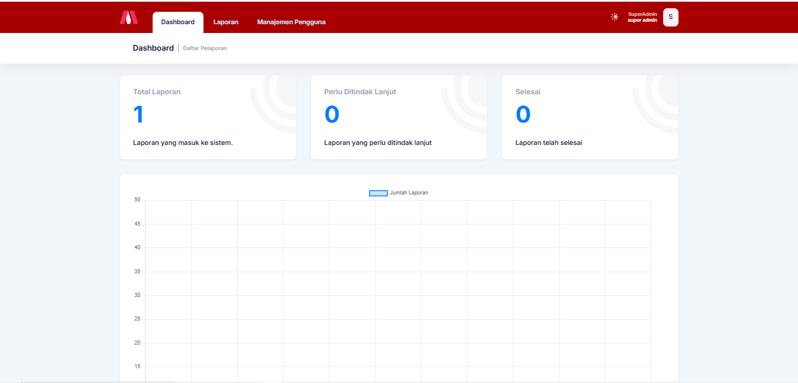
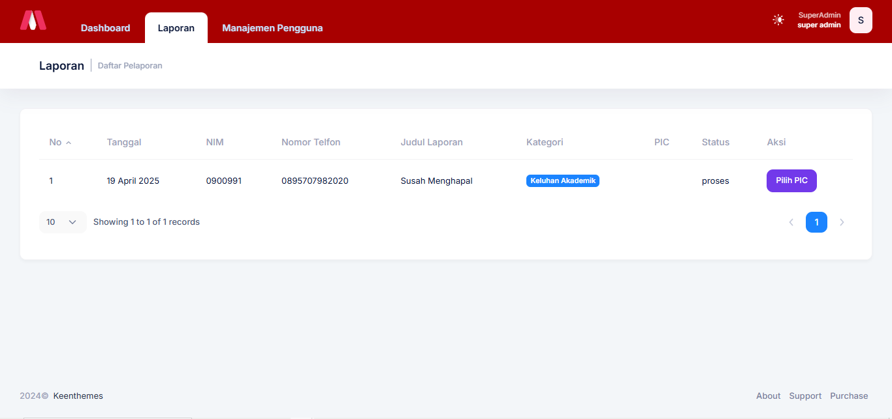

Kembali ke Portofolio



SI-PELAPORAN
Tentang Projek
Sistem pelaporan kampus yang dirancang untuk memfasilitasi mahasiswa dan civitas akademika dalam menyampaikan berbagai bentuk keluhan, khususnya yang berkaitan dengan isu akademik dan pelecehan seksual. Sistem ini dibangun untuk menciptakan lingkungan kampus yang lebih aman, transparan, dan responsif.
- Pelaporan kasus akademik dan pelecehan seksual secara anonim atau terbuka
- Pemantauan status laporan secara real-time
- Notifikasi otomatis melalui Email
- Panel admin untuk tindak lanjut dan dokumentasi kasus
Manfaat untuk Civitas Akademika:
- Meningkatkan rasa aman dan kenyamanan di lingkungan kampus
- Mempercepat respon dan tindak lanjut dari pihak berwenang
- Memfasilitasi pelaporan tanpa harus hadir langsung
- Mendorong budaya keterbukaan dan akuntabilitas
Teknologi Utama
Laravel
JavaScript
SQL
Bootstrap